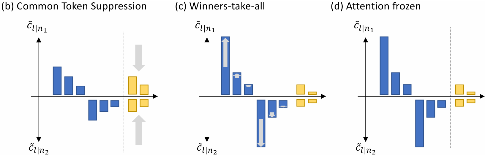

Yiping Wang 王宜平
Yiping Wang |
About me
I'm a Ph.D. student in Paul G. Allen School of Computer Science & Engineering at University of Washington starting from Fall 2023. I feel very fortunate to work with Prof. Simon Shaolei Du. Prior to UW, I studied Computer Science and Mathematics in Zhejiang University, got an honors degree from Chu Kochen Honors College.
I'm grateful to all my collaborators and mentors along the way. I'm privileged to have been working closely with Dr. Yuandong Tian since Spring 2023. I've been interning at Microsoft since June 2024, where I'm fortunate to be advised by Yelong Shen and Shuohang Wang. During my undergraduate, I was fortunate to work with Prof. Huaxiu Yao and Prof. Linjun Zhang.
My long-term research goal is to develop safe AI systems with super-human capabilities that can drive significant scientific progress.
News
10/2025: Get Amazon AI Ph.D. Fellowship, thanks Amazon!
08/2025: Give a talk on One-Shot RLVR at a group meeting at Tsinghua University.
05/2025: Release Spurious Rewards, which uses RLVR with random reward to incentivize the reasoning capability of pretrained models.
05/2025: Present One-Shot RLVR in BAAI Talk.
04/2025: Release One-Shot RLVR (Code, X), rank as #1 Paper of the day on HuggingFace Daily Papers! We find that with a strong base model, RLVR can improve LLM reasoning with only one proper training example.
12/2024: Release a new video generation benchmark StoryEval, showing that current top video generative models can not present multi-event stories like "How to Put an Elephant in a Refrigerator".
09/2024: Attend MoDL 2024 in New York sponsored by Simons Foundation, and presenting CLIPLoss (NeurIPS 2024 spotlight).
06/2024: Start my internship at Microsoft!
05/2024: Release CLIPLoss, which designs a simple but efficient data selection methods for CLIP pretraining, gets the new SOTA in DataComp benchmark.
10/2023: Release JoMA, which analyzes the training dynamics of multilayer transformer and characterizes the role of self-attention and MLP nonlinearity.
09/2023: Become a husky in UW!
05/2023: Release Scan&Snap, which analyzes the training dynamics of 1-layer linear transformer with next token prediction loss.
Main Research
(* denotes equal contribution or alphabetic ordering, † denotes corresponding author)
LLM RL
Reinforcement Learning for Reasoning in Large Language Models with One Training Example
|
Multimodal
 |
Is Your World Simulator a Good Story Presenter? A Consecutive Events-Based Benchmark for Future Long Video Generation
|
 |
CLIPLoss and Norm-Based Data Selection Methods for Multimodal Contrastive Learning
|
Theory of Transformer Dynamics
|  |
Scan and Snap: Understanding Training Dynamics and Token Composition in 1-layer Transformer
|
 |
JoMA: Demystifying Multilayer Transformers via JOint Dynamics of MLP and Attention
|